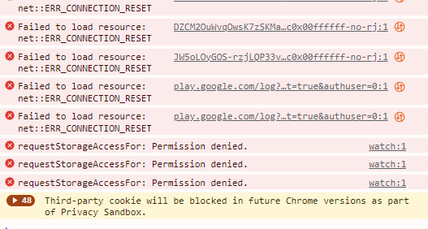

| JDKriss(Jd Kriss) | Данные:
-Windows 10
-Opera GX
-Версия программы -0.2.3rc1 (новейшая)
Проблема:
-Все фиксы, которые я пробовал не решили вопрос с загрузкой видео на YT(Другие сайты работают как надо в.т.ч PH, но очень медленно (пример работающего видеообменника)
-Когда я запускаю YT происходит всегда одно и то же. Главная страница, превью, уведомления, и даже таймлайн на самом видео (т.е я могу посмотреть кадры из видео) загружаются успешно, но сам видос уходит в вечную загрузку
Я обычный юзер и не являюсь технически подкованным человеком. Я пытался сделать всё, что было в моих силах, чтобы справиться с проблемой, но последние 4 дня у меня ничего не получатся. Прошу помощи у более умных людей
Начиная с 17.09 программа GoodbyeDpi перестала корректно работать. Нашел решение - смена модсетов в cmd. файлах. Я пробовал “-1, -5, -6, -7” (безуспешно).
Потом помог “-e 2 -f 1 --reverse-frag” примерно на сутки - после перезапуска ПК всё снова отвалилось. Читал и тут и на на гитхабе темы с решениями. По сути попробовал все возможные варианты, которые были связаны с изменением модсетов.
Помимо этого - перезапускал Wi-Fi на ПК, многократно перезапускал сам ПК, переустанавливал GoodbyeDpi, менял настройки Kyber и QUIC (сейчас обе переведены в Disabled)
Заранее отвечая на вопрос: расписываю свой порядок действий
-Не загружается видео YT
-Открываю “1_russia_blacklist” или “1_russia_blacklist_dnsredir” через блокнот (в зависимости от того, который я юзал
-Изменяю модсет на новый
-закрываю открытое окно goodbyedpi
-Запускаю “service_remove” от имени администратора
-Запускаю изменённый файл от имени администратора
-Перезапускаю браузер
-Открываю новую вкладку с YT
-Начинаю громко плакать, поскольку снова не помогло.
При открытии консоли на вкладке с YT показывает разный набор ошибок

это появляется при значении модсета “-1”
Бывает по-другому
При других модсетах другие ошибки (в этом случае “-e 2 -f 1 --reverse-frag”)
Я ничего не понимаю, но красное = плохо и тут много красного
Надеюсь на помощь
ps.админы не закрывайте тему, умоляю. Я спать ложусь и не смогу попробовать советы ближайшие 8-10 часов | 2024-09-19T22:50:25.207Z |
{kind=link}